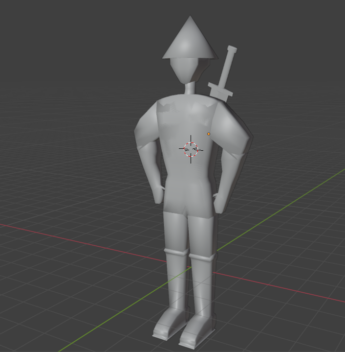

project 1
Overview
In this project I am desgning and rendering a 3D game character by using blender. The character I rendered is a low poly warrior designed for a 3D stylized game. I designed this character inspired by Samurai theme. This character is suitable for games like action, adventure, hack and slash games. The shape of his arm, sword and the posture (stance) make him ideal for characters in those types of games. This character works perfectly as it is a low poly character which helps keep the performance high. Triangular hat is one of the most significant features of this character which suggests a background of ancient or fantasy culture, and it also provides a better appearance to a gaming character. Body parts of this character are made up of unique shapes. For example, the width of the torso increases when it goes up, which provides a better appearance for a warior character. 
Tools and software
- Blender

End User
There are two main types of end users of the character I made. The main users of low poly warrior characters are game developers and players of games like action, adventure and hack and slash genres. Game developers find the low poly stylish game characters more appealing due its performance and the designs. The main reason why game developers often prefer low poly warrior characters is because it is easy for customization and integration into a variety of games as the design of the is not too complex. They need models that perform well, especially for creating games that require a smooth frame and fast performance. Otherwise, this character has a simple, stylish design, perfect for attracting players. 3D modelers and Artists are another type of end user of this character as they will appreciate the simplicity of the low poly design, which gives them space for further development. They need simple and stylish poly characters made out of geometry shapes which helps them to do easy rigging, texturing and developing the character into a further developed one. Players who played action and adventure games are also a significant end user of these low poly characters because these kinds of characters are mainly used in action and adventure games. The most important feature that players need in their character is for it to look visually appealing, which helps keep them engaged in the game. Triangular hat, sword and the unique stance of the character reinforce the samurai theme and evokes a sense of tradition. The design of this low poly character fulfills players' needs. Using these sorts of characters is an effective way to keep the player playing the game for a long time.
Requirements & Specifications
1.Torso: WIde at the top and narrow at the bottom, giving a heroic appearance to the character. Rigged for animation
2.Arms: Large biceps, bent and angled outward, made out of two cubes, position the lower arm and the hand towards the waist, rigged for animation. Overall, the shape and the way the arm is positioned will emphasize the strength of the low poly character.
3.Legs:Upper leg angled outward. made out of two cubes, one is the upper leg and the other is the lower leg. Legs are quite thin, rigged for running animation.
4.Head:Simple low poly shape. Used a cube initially and adjusted vertices to make a slightly spherical shape, rigged for animation.
6.Feet:positioned inside of a boot, can't see the feet, positioned on the ground, suggesting a readiness, rigged for running animation.
5.Hands:Made out of simple objects in order to make it clear and easy to animate, which keeps the movement smooth, rigged for animation.
6.Triangular hat:Made out of a cone, quite wide, referring to samurai culture. Rigged for animation
7.Sword:long, stylish, and also has a cover, perfect for hack and slash games.
Implications
When I designed my low poly character, I carefully considered Aesthetic, Functionality, Usability, Intellectual Property Implication and some other relevant implications of the character of the character. They are really important because they play a crucial role in making the character suitable for your end users. For example, aesthetic implications of the character affect how the character looks and how players feel about it. Functionality of the character is about how well it works. People won’t use it if it doesn’t perform well like taking forever to load, crashing the tab. It also causes some issues with animating your characters. Usability of a character is about making the character easy for developers to use and for players to interact with. So, it is also a significant part of making a character. Intellectual Property is also another important factor of creating a character. If you copied from someone else's design it could cause you to be banned from publishing or using your character in games.
Aesthetic
I gave the character large, angular biceps to visually show the strength of the character, which is a key element of a perfect character in games like action, adventure and fighting games. This makes the player feel more powerful and confident, when they look at the character. Otherwise, the angle of the arm gives the character a strong identity. Instead of placing the arm straight like normal, I just bent and angled the arm outward, which creates a sense of power. This is a better way to make the character look better for action and adventure games. The torso of the character is becoming wider when it goes up, which gives a character a heroic appearance and it also gives a feeling like this is a character in a game not like someone in real life. The technique that I used in making the torso is called visual movement where the character draws the player’s eye in a certain direction (towards the top). The use of this proportion helps us to emphasize the upper part of the body as the torso has a wide top and a narrow bottom. It guides the player’s eyes upward toward the sword and the head with a triangular hat. The stance is also another major feature of the character where I aesthetically developed the character. The stance is firm and the way the legs are placed shows confidence and the readiness of the character, providing a better personality to the character even without moving and any facial features.
Functionality
This character is designed to be highly functional in a 3D game environment, especially for action, adventure, and hack-and-slash genres. I used low polygons to make the character which means it performs well. If I use high polygons to make the character, it could cause several issues such as crashing the tab, stucking on the game screen. This character performs well on mobile devices and lower end PCs (a type of computers that struggle with more demanding games or programs). For example, to create the triangular hat of the character, I used a cone and then applied the boolean tool with another cone. I could also use a different way to make the hat look cooler but I used a simple geometry shape because it will avoid causing issues with the functionality of the character. I used the same method to make other components of my character too because it will reduce the chance of getting functionality issues. Otherwise, this character will run smoothly in games even if multiple characters are on the same screen. I used functional development techniques to make the body of the character. For example, The arms are angled outward, giving enough space to distinguish the arm with the torso when animating the character. This makes it easier for game developers to adjust the movement of the character according to their needs. I used a formal balance (symmetrical design) to make the character. This improves the functionality of the character as it helps with moving the parts of the both sides of the character in the same way like mirroring the animation.
Usability
This character is designed to be easy to use for both game developers and players. For players, the character is clear and easy to find on a game screen. Features like, wide upper torso, triangular hat, sword, and large arms makes it easy to recognize on screen. This helps the player understand what the character is doing quickly which is an important part of an action adventure as the player needs to control the character very quickly in order to win the game. The way the arms are placed gives a lot of space for attack animations to occur without any clashes. The straight posture with nice feet placement gives a balanced look to the character, making it simple to find where the character is standing and how it moves. Using simple geometry when making the character makes it easy for the game developers to animate and customize the character according to their needs. As the parts of the body are not too detailed, developers can easily find parts of the body if they want to make any changes of the body depending on their desire.
Intellectual Property Implication
I designed this low poly character inspired Samurai theme, I made the design unique in order to make sure that I’m not breaking IP laws. For example, I created a triangular hat, shaped the torso widen at the top while it has a narrow bottom, and made the biceps of the character quite larger than normal to make my character unique. The reason why I have to make sure that I’m using my own designs is because breaking IP rules (copyrighting someone’s project) could lead to the character being removed or not being allowed to be in published games.